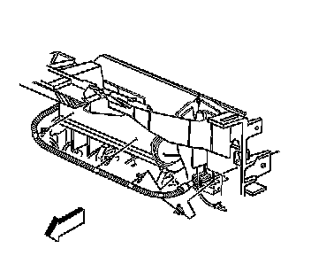
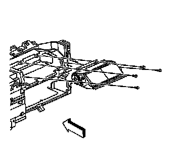

Inflatable Restraint Instrument Panel Module Replacement
Inflatable Restraint Instrument Panel Module Replacement
Removal Procedure
Caution: Refer to SIR Inflator Module Handling and Storage Caution (SIR Inflator Module Handling and Storage Caution) .
Caution: A deployed dual stage inflator module will look the same whether one or both stages were used. Always assume a deployed dual stage inflator module has an active stage 2. Improper handling or servicing can activate the inflator module and cause personal injury.
Caution: Refer to SIR Caution (SIR Caution) .
1. Disable the SIR system. Refer to SIR Disabling and Enabling (Service and Repair) .
2. Remove the I/P retainer. Refer to Instrument Panel Retainer Replacement (Left Hand Drive) (Service and Repair)Instrument Panel Retainer Replacement (Right Hand Drive) (Service and Repair) .

3. Note the wire harness routing position on the I/P module, to help in assembly.

4. Remove the I/P module mounting fasteners.
5. Remove the I/P module from the I/P.
Installation Procedure
1. Route the I/P module pigtail down through the I/P.
2. Install the I/P module to the instrument panel.
Notice: Refer to Fastener Notice .
3. Install the I/P module mounting fasteners.
Tighten the fasteners to 9 N.m (80 lb in).
4. Route the I/P module wiring harness in place to secure the I/P module yellow 2-way connector clip.
5. Install the I/P retainer. Refer to Instrument Panel Retainer Replacement (Left Hand Drive) (Service and Repair)Instrument Panel Retainer Replacement (Right Hand Drive) (Service and Repair) .
6. Install the I/P module yellow connector to the vehicle harness yellow connector.
7. Install the CPA to the instrument panel module connector.
8. Enable the SIR system. Refer to SIR Disabling and Enabling (Service and Repair) .
9. After replacing the module, deploy the old module before disposal. If the module was replaced under warranty, fully deploy and dispose of the module after the required retention period. Refer to Inflator Module Handling and Scrapping (Service and Repair) for proper disposal.